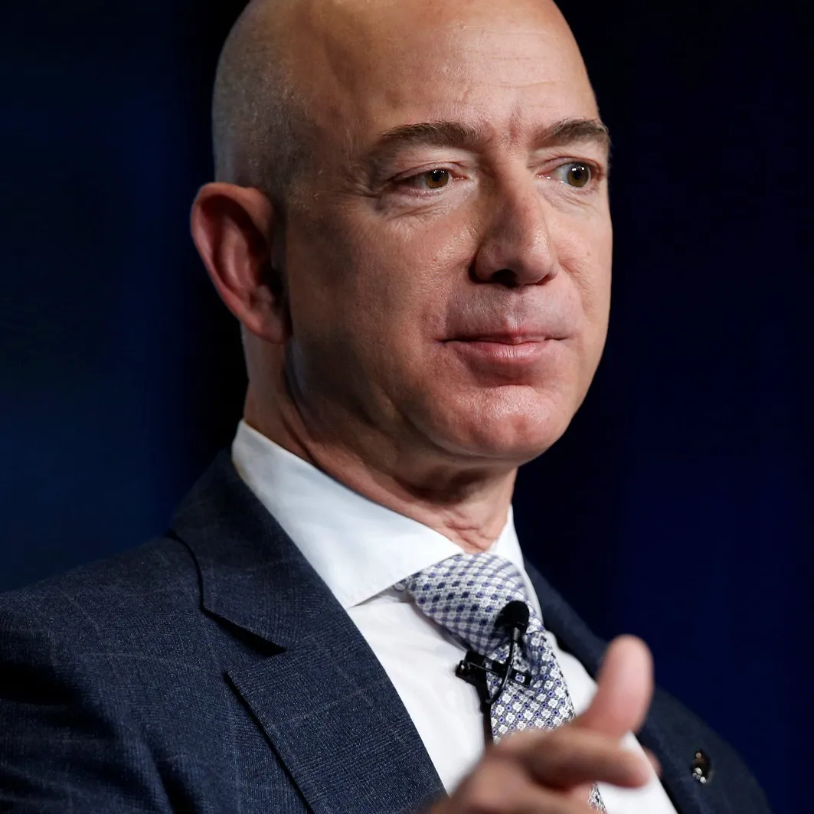
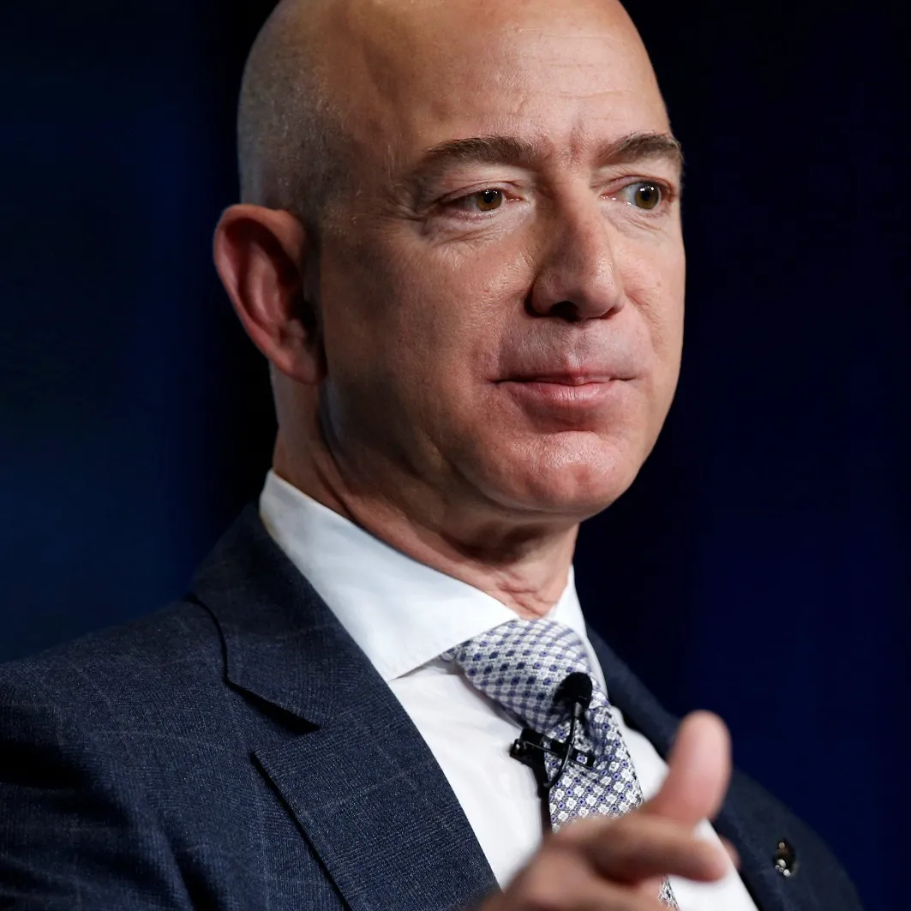

.jpg) 


es un magnate empresarial, desarrollador de software, inversor, autor y filántropo estadounidense. Es cofundador de Microsoft, junto con difunto amigo de la infancia Paul Allen. Durante su carrera en Microsoft, Gates ocupó los cargos de presidente, director ejecutivo (CEO), presidente y arquitecto jefe de software, además de ser el mayor accionista individual hasta mayo de 2014. Fue uno de los principales empresarios de la revolución de las microcomputadoras de las décadas de 1970 y 1980.
Jeff Bezos es el creador de Amazon, el fundador de Blue Origin y, desde 2013, el propietario de The Washington Post; un hombre ambicioso, apasionado, persuasivo, paciente, severo, con los pies en el suelo y la cabeza en el futuro. Pero también es el hombre que le dio fama mundial al apellido de una familia emigrante de Villafrechós, un pueblo de 500 habitantes, de Valladolid, que el cienmilmillonario visitó en privado en 2011 para conocer los orígenes de su padre adoptivo.
fue un empresario, diseñador industrial, magnate empresarial, propietario de medios e inversor estadounidense. Fue cofundador y presidente ejecutivo de Apple y máximo accionista individual de The Walt Disney Company. Fundó Apple en 1976 junto con un amigo de la adolescencia, Steve Wozniak, con ayuda del excompañero de Jobs en Atari, Ronald Wayne, en el garaje de su casa.